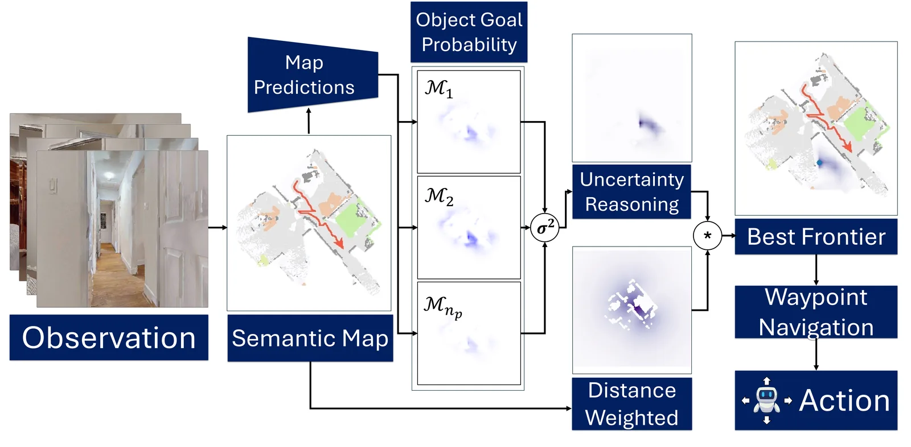
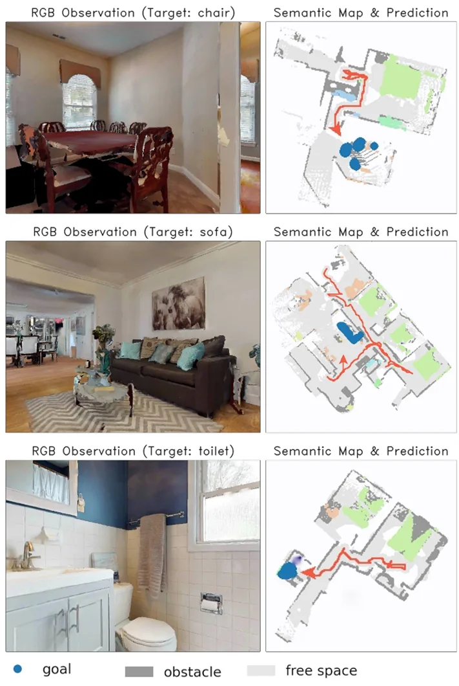
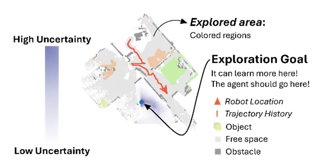

IJCAS · Under revision
Uncertainty-Driven Exploration for Object-Goal Navigation
An ensemble of semantic-map predictors turns disagreement over unseen space into an exploration signal, reaching a 64.0% success rate and 0.3228 SPL on HM3D.
- Venue
- IJCAS
- Status
- Under revision
- Role
- First author
- When
- 2025 – 2026
- Where
- Robotics & AI Lab, Kwangwoon University
Abstract
Object Goal Navigation (ObjectNav) requires an agent to locate a target object in an unseen environment under severe partial observability. While recent modular approaches leverage explicit map prediction to guide goal-directed navigation, they typically rely on a single deterministic predictor, which often produces overconfident estimates and leads to suboptimal exploration in ambiguous regions.
In this work, we propose an uncertainty-driven exploration framework that transforms predictive disagreement into an actionable exploration signal. Specifically, we use the empirical variance across target-specific probability maps produced by independently trained semantic map predictors as a practical approximation of epistemic uncertainty. The resulting uncertainty map highlights regions where additional observations are expected to be most informative. To ensure feasibility, we further integrate geodesic reachability using the Fast Marching Method (FMM), yielding a value map that balances information gain and traversal cost. Unlike prior approaches that rely on deterministic semantic prediction or geometry-based frontier heuristics, our method uses predictive disagreement in semantic map completion for long-term goal selection.
Experiments on the HM3D benchmark demonstrate that our approach achieves 64.0% SR and 0.3228 SPL, outperforming frontier-based, implicit map, generative map, and deterministic semantic baselines. In addition, our method consistently achieves higher map coverage under identical timestep constraints, indicating more efficient and informative exploration.


